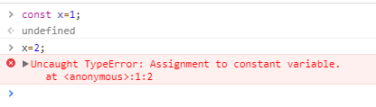

ECMAScript
- ECMAScript：是一种脚本语言规范。可以理解为：ECMAScript是JavaScript的规范，JavaScript是ECMAScript的实现。
- 常量。 用const关键字声明常量，在同一作用域中常量名不能与变量名、函数名冲突，且常量在初始赋值后，就不能再重新赋值了。

- 块级作用域。
JavaScript没有块级作用域：即在语句块中定义的变量，在语句块外同样可以访问。

可以使用let定义变量并赋值，这样该变量在定义的代码块外不能被访问

- 函数-->剩余参数与分布参数

剩余参数语法，表示：至少传两个参数，剩下的参数收集到ns数组中。
分布参数：向函数中传入一个数组，然后数组中的元素会映射到函数的每个参数上。

- 函数-->默认参数值

要为参数指定默认值，直接给参数赋值即可。当只传1个参数时，会使用默认参数值，当默认参数位置传了值时，使用传的值，不使用默认参数。
- 函数-->生成器
就是一个对象，每次能生成一系列值中的一个。

- Generator函数
function* 函数名(){...}

函数返回一个迭代器。next()会执行到下一个yield处，value是值，done：false表示迭代未执行完毕。

- 迭代器
自己实现对象的迭代器

- 箭头函数Arrow Function
x=>x*x等价于：function(x){return x*x;}
箭头函数相当于匿名函数，简化了函数定义，有两种格式
- 只包含一个表达式，{...}和return都省略了
- 可以包含多条语句，不能省略{...}和return.

有多个参数的，用（）括起来

返回对象时，这么写是无效的，因为对象的{}与函数的{...}有语法冲突，

应该这么写：

箭头函数看上去是匿名函数的一种简写，但实际上，箭头函数和匿名函数有个明显的区别：箭头函数内部的this是词法作用域，由上下文确定。

在箭头函数中：

- 解构赋值
从一组值中挑出若干个值，把他们分别赋给独立的变量

取某个值：

交换变量的值：

交换对象的值：


- 代理对象Proxy
var proxy=new Proxy(target,handler);//target:要拦截的目标对象；handler:拦截行为
Proxy可以理解成，在目标对象之前架设一层”拦截“，外界对该对象的访问，都必须先通过这层拦截。
get（）方法：用来拦截某个属性的读取操作，可接受三个参数：目标对象、属性名、Proxy实例本身（即this指向的那个对象，可选）
set（）方法： 用来拦截某个属性的赋值操作，可接受四个参数：目标对象、属性名、属性值、Proxy实例本身（可选）

当访问不存在的属性时，是显示undefined，可设置拦截器抛出一个错误

get方法可以继承，读取obj对象继承的属性时，拦截就会生效


如果一个属性不可配置（configurable）和不可写（writable），则该属性不能被代理，通过 Proxy 对
象访问该属性会报错。

get方法的第三个参数总是为当前的Proxy实例


- Map类型
也称为：简单映射，目的：保存一组键值对。简单映射能做到键和值与对象属性分离，从而保证对象属性的安全存储。用法如下：


Map的forEach

- Set类型
集合中只有键，没有与键关联的值，并且是一组不重复的元素。

可接受一个数组作为参数初始化：

作用：数组去重


两个空对象不相等

Set的forEach

- WeakMap
是用来保存键值对的，但是键必须是对象（null除外），当对象不存在时，相关的键值对就会从WeakMap中删除。不能遍历他的成员。

WeakMap只有四个方法可用：get、set、has、delete；
- WeakSet
是不重复值的集合，成员只能是对象。能遍历他的成员。
数组a作为WeakSet构造函数的参数，a的成员会自动成为WeakSet构造函数的参数，a的成员也是数组

注意：是数组a的成员成为WeakSet的成员，而不是数组a本身，下面这个例子就不行：

WeakSet只有三个方法可用：add、delete、has；